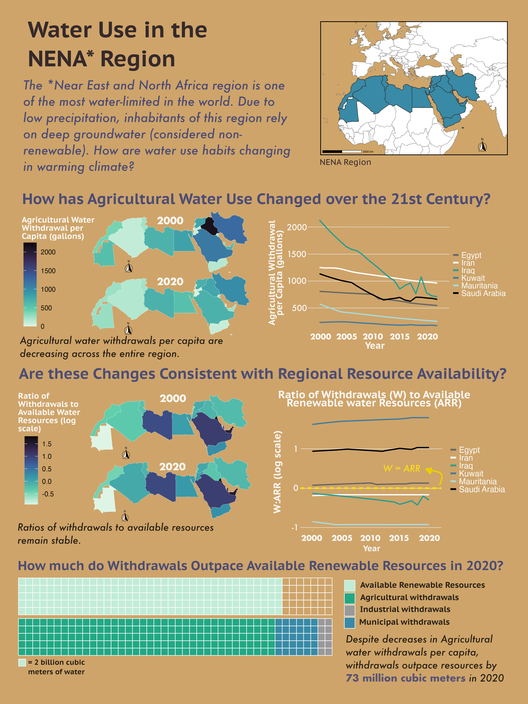
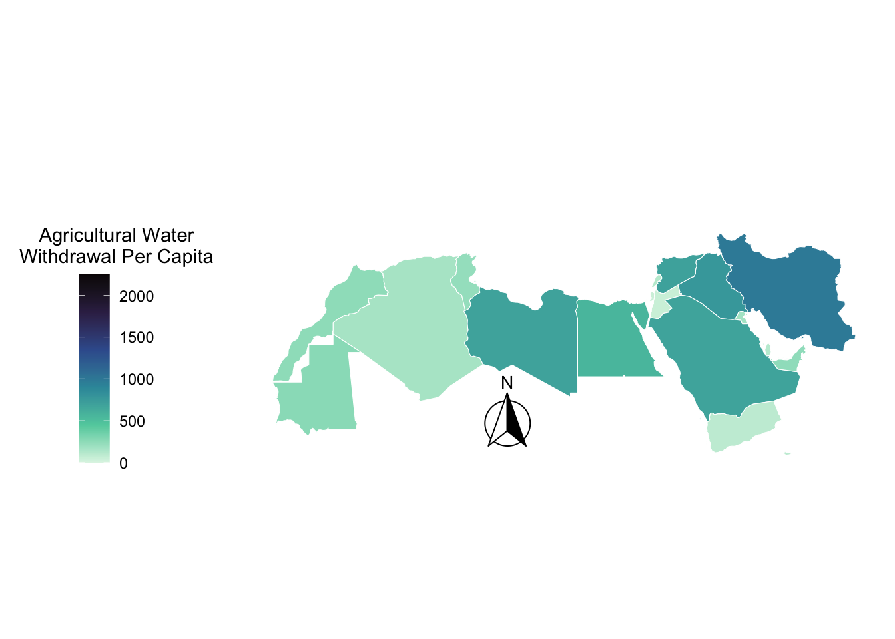
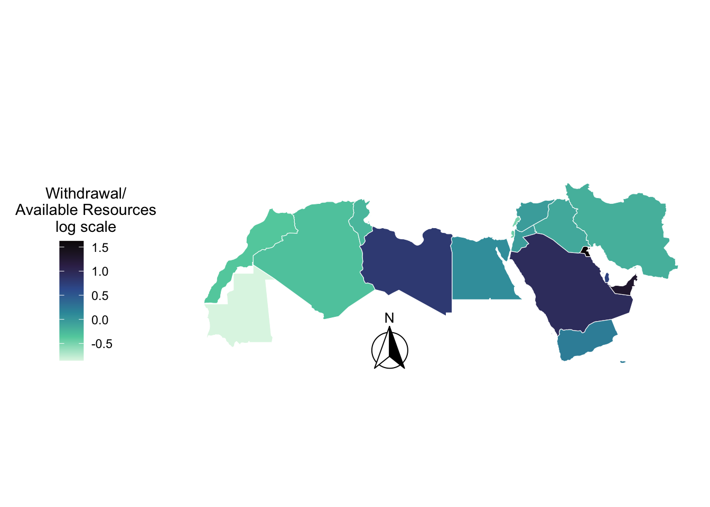
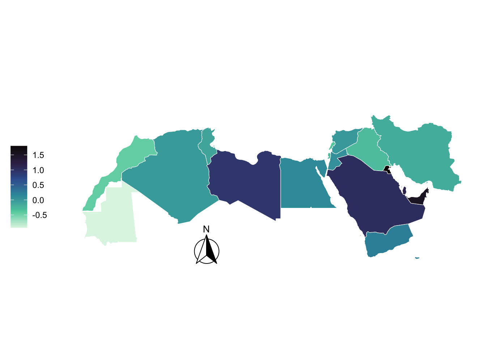
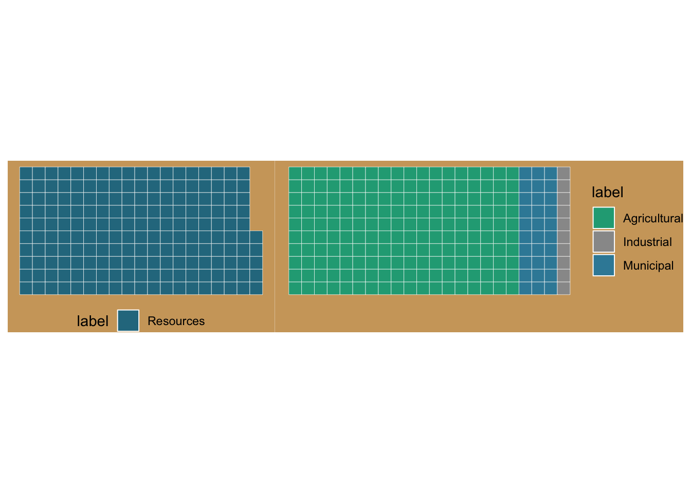

Code
knitr::include_graphics("eds230_final_viz.png")
Henry Oliver
March 9, 2026
Imagine trying to run a farm, power cities, and supply millions of people with water—while living in one of the driest regions on Earth. This is the reality for countries across the Near East and North Africa (NENA). As climate change intensifies heat and drought, water scarcity is becoming an even more pressing challenge. While researching groundwater decline in arid regions across the globe, I became curious about a bigger question: How has water use in our most water-limited regions changed over the past two decades? To investigate, I used the FAO’s AQUASTAT database to create an infographic exploring trends in water withdrawals and how they compare to the region’s limited renewable freshwater supplies.
My first step was deciding what data to use. I knew I was interested in large-scale trends in water use, and the Food and Agriculture Organization provides a global database called FAO AQUASTAT that tracks water resources and withdrawals across countries. It offered exactly the kind of big-picture statistics I was looking for. Next, I had to decide where to focus my analysis. At first I considered looking at global patterns, but an infographic has limited space, and including too many countries would make the story harder to follow. Since I was already interested in arid regions of the Middle East, I narrowed my focus to the Near East and North Africa, which FAO identifies as one of the most water-stressed regions in the world. The next challenge was choosing what metrics to show. I wanted to answer a pretty complex question: how is water use changing across an entire region? My original plan was to visualize how the shares of agricultural, municipal, and industrial water use had changed over the past forty years. But as I explored the data, two problems appeared. The figures quickly became redundant as agriculture dominates water withdrawals in most of these countries—and there were also large gaps in the data between 1980 and 2020. Because of this, I decided to focus on the sector where most of the water is used: agriculture. To keep the data consistent across countries, I also narrowed the timeframe to 2000–2020. At first, I expected the data to show steadily increasing water stress across the region. But when I began plotting the numbers, a more different story emerged. Agricultural water withdrawals were decreasing in many countries, even as renewable water availability per person continued to decline. Surprisingly, overall water stress appeared relatively constant. This contrast became the central story of my infographic. Visualizing water stress itself proved tricky. The values varied so widely that the data only worked on a logarithmic scale, which isn’t always intuitive for a general audience. To make the concept more tangible, I designed the final figure as a waffle chart that directly compares the volume of water withdrawals to available renewable water resources, giving readers a clearer visual sense of how tightly water supply and demand are balanced in the region.
My results show that agricultural water use is changing across the region. The darkening of my agriculture map from 2000 to 2020 highlights this shift, and the trendlines between the figures emphasize the overall decline in agricultural withdrawals per capita. At first glance, this might suggest that water stress should also be decreasing. But the data tell a more complicated story.
Even as agricultural withdrawals per person decline, the overall ratio of withdrawals to renewable water resources remains largely unchanged for most countries. This is visible in the second figure, where the two maps look strikingly similar. One possible interpretation is that water use in the region is already constrained by limited supply. In other words, reductions in withdrawals may not reflect improving water availability, but rather the reality that countries are already operating close to the limits of their renewable water resources. Declining water availability per capita—driven by population growth, climate change, and increasing aridity—may be forcing changes in agricultural water use rather than relieving water stress.
It should be mentioned that there are important uncertainties in the data. Many of the water withdrawal statistics compiled in the FAO AQUASTAT rely on information self-reported by individual countries. In regions like the Middle East and North Africa, groundwater withdrawals—especially from deep aquifers—can be difficult to measure accurately. Monitoring networks are often limited, and groundwater pumping from thousands of unregulated wells is rarely fully tracked, making total withdrawal volumes uncertain. (CSIS)
Because of these challenges, reported withdrawal volumes may underestimate the true amount of groundwater being used across the region. Even with these uncertainties, the broader trends remain concerning. Declining agricultural water availability per person combined with stable—or potentially underestimated—water stress suggests that water conditions in the region may be worsening rather than improving. In a region already considered one of the most water-stressed in the world, these patterns highlight the growing challenge of balancing food production with limited freshwater resources.
I combined maps and a line chart to show my trend! I’m also using a waffle chart to show ratios of resources and use
I’m adding captions to all of my figures, and labeling my data as necessary. Much of this labeling was done in Affinity because positioning my labeling and getting fonts to work was proving to be frustrating. Most of my axis labeling is just years - I want people to focus on trends, not units. I do have legends with labeled units.
Themes are very minimal, and they follow my color scheme - desert oasis. I used AI to help me with theme syntax, but I wanted everything to be stripped down.
I use the Mako viridis color palette, and a sandy brown background to give the vibe of water in the desert. I think it looks refreshing
My font size, color, and positioning is very purposeful. Interpretations are written in futura, while and investigating questions are in my other font. I tried to lay it out so that the reader reads the infographic from top to bottom, and then goes back to read little things in italics.
I want to have things flow from top to bottom. I think that middle of my map and line graph figures get pretty busy, but the trend is clear and that’s the most important bit. Most importantly, I want to show my cool trend, show the conflicting trend, and then contextualize both.
I contextualize my data with a brief description at the beginning, and then use my last figure to help visualize my findings at the end. I also use a map to show my region in the top right.
My primary message is that agricultural water use is changing, but water stress remains high - this is all present in the logical flow of the document. This specific interpretation is kinda off too the side, but my two conflicting trends are dead center of the infographic.
I made sure my color palettes don’t have hues that are too similar, and that the figure can still be interpreted somewhat in black and white. I also avoided using and red or green.
applying a DEI lens to your design, as appropriate (e.g. considering the people / communities / places represented in your data, consider how you frame your questions / issue)
I’m not making much of an effort to bring historical or cultural context to my display. I want to make sure that my analysis doesn’t come across as critical or negative - but I am highlighting a sustainability concern. I plan on avoiding terms like “water stress” and trying to avoid viewer conclusion that people in this area are “using too much water”. I think I can do this by having a warm tone in my final graphic, and addressing the affects of regional climate and climate change.
water_wider$area[water_wider$area == "Iran (Islamic Republic of)"] <- "Iran"
water_wider$area[water_wider$area == "Syrian Arab Republic"] <- "Syria"
common_names <- intersect(water_wider$area, nena_region$admin)
# Join geometry from nena_region into water_wider
water_nena <- water_wider %>%
left_join(nena_region %>% select(admin, geometry),
by = c("area" = "admin")) %>%
st_as_sf() # Ensures R recognizes it as a spatial object
water_nena <- water_nena[water_nena$area != "Sudan", ]ref_map <- ggplot() +
geom_sf(data = world, fill = "white", color = "grey40", linewidth = 0.35) +
geom_sf(data = water_nena, fill = "#388AA6", color = "grey20", linewidth = 0.6) +
coord_sf(xlim = c(-22.34375, 74.53125), ylim = c(2.52476, 59.71210)) +
theme_void() +
theme(
panel.background = element_rect(fill = NA, color = NA),
plot.background = element_rect(fill = NA, color = NA)
) +
annotation_north_arrow(
location = "br",
which_north = "true",
pad_x = unit(2, "cm"),
style = north_arrow_fancy_orienteering()
) +
annotation_scale()
ggsave("ref_map.png", ref_map, bg = "transparent", width = 8, height = 6, dpi = 300)ag_2000 <-
ggplot(water_nena %>% filter(year=="2000")) +
geom_sf(aes(fill = agricultural_water_withdrawal_per_capita), color = "white", size = 0.2) +
scale_fill_viridis_c(option = "mako", direction = -1, limits = c(0, 2250),
guide = guide_colorbar(direction = "vertical", title.position = "top")) +
annotation_north_arrow(location = "bl", which_north = "true",
pad_x = unit(4.5, "cm"),
style = north_arrow_fancy_orienteering()) +
theme_minimal() +
theme(
panel.grid = element_blank(),
panel.background = element_rect(fill = NA, color = NA),
plot.background = element_rect(fill = NA, color = NA),
legend.position = "left",
legend.key.height = unit(0.75, "cm"),
legend.title.position = "top",
legend.title = element_text(hjust = 0.5),
axis.text = element_blank(),
axis.title = element_blank(),
plot.title = element_text(hjust = 0.5, color = "white", size = 24, face = "bold")
) +
labs(fill = "Agricultural Water\nWithdrawal Per Capita", title = "2000")
ggsave("ag_2000.png", ag_2000, bg = "transparent", width = 10, height = 6, dpi = 300)# Identical to previous except where commented
ag_2020 <- ggplot(water_nena %>% filter(year=="2020") %>% #filter to 2020
filter(area != "Sudan")) +
geom_sf(aes(fill = agricultural_water_withdrawal_per_capita), color = "white", size = 0.2) +
scale_fill_viridis_c(option = "mako", direction = -1, limits = c(0, 2250),
guide = guide_colorbar(direction = "vertical", title.position = "top")) +
annotation_north_arrow(location = "bl", which_north = "true",
pad_x = unit(4.5, "cm"),
style = north_arrow_fancy_orienteering()) +
theme_minimal() +
theme(
panel.grid = element_blank(),
panel.background = element_rect(fill = NA, color = NA),
plot.background = element_rect(fill = NA, color = NA),
legend.position = "left",
legend.key.height = unit(0.75, "cm"),
legend.title.position = "top",
legend.title = element_text(hjust = 0.5),
axis.text = element_blank(),
axis.title = element_blank(),
plot.title = element_text(hjust = 0.5, color = "white", size = 24, face = "bold")) +
labs(fill = "Agricultural Water\nWithdrawal Per Capita", title = "2020")
ag_2020
# Trend lines for select NENA countries (2000-2022)
ag_trend <- water_nena %>%
filter(area %in% c("Saudi Arabia", "Iraq", "Iran", "Egypt", "Kuwait", "Mauritania")) %>%
filter(year >= 2000 & year <= 2022) %>%
ggplot(aes(x = year, y = agricultural_water_withdrawal_per_capita, color = area)) +
geom_line(linewidth = 2) +
scale_color_manual(values = c("grey40", "white", "#2A9D8F", "#457B9D", "#A8DADC", "black")) +
scale_x_continuous(expand = expansion(mult = c(0.1, 0.1))) +
theme_minimal() +
theme(
panel.grid.minor = element_blank(),
panel.grid.major.x = element_blank(),
panel.grid.major.y = element_line(color = alpha("white", 0.3)),
panel.background = element_rect(fill = NA, color = NA),
plot.background = element_rect(fill = NA, color = NA),
axis.text = element_text(color = "white", size = 24),
axis.ticks.x = element_line(color = "white"),
axis.line.x = element_blank(),
legend.position = "right",
legend.text = element_text(color = "white", size = 20),
legend.key = element_rect(fill = NA)
) +
labs(x = NULL, y = NULL, color = NULL)
# Save as transparent PNG
ggsave("ag_trend.png", ag_trend, bg = "transparent", width = 10, height = 6, dpi = 300)# Prepare data and calculate the log10 ratio
map_data <- water_nena %>%
filter(year == "2000") %>%
filter(area != "Northern Africa") %>% # Filter out continent level data
filter(area != "Sudan") %>% # Filter out countries that don't have data in 2020
mutate(
ratio = total_water_withdrawal / total_renewable_water_resources,
# log10(1) = 0. Values > 0 are over-withdrawing.
log_ratio = log10(ratio)
) %>%
# Remove non-finite values (like log(0)) to avoid legend errors
filter(is.finite(log_ratio))
# Capture the exact min and max for the legend
val_range <- range(map_data$log_ratio, na.rm = TRUE)
# Create logical breaks from min to max
log_breaks <- seq(floor(val_range[1] * 2) / 2,
ceiling(val_range[2] * 2) / 2,
by = 0.5)
# Map
stress_2000_log <- ggplot(map_data) +
geom_sf(aes(fill = log_ratio), color = "white", size = 0.2) +
scale_fill_viridis_c(
option = "mako",
direction = -1,
limits = val_range, # Legend runs exactly from min to max
breaks = log_breaks, # Logical steps (e.g., -1, -0.5, 0, 0.5, 1)
guide = guide_colorbar(
title =("Withdrawal/\nAvailable Resources\nlog scale"),
direction = "vertical",
title.position = "top",
barheight = unit(3, "cm")
)
) +
annotation_north_arrow(
location = "bl",
which_north = "true",
pad_x = unit(4.5, "cm"),
pad_y = unit(-0.05, "cm"),
style = north_arrow_fancy_orienteering()
) +
theme_minimal() +
theme(
panel.grid = element_blank(),
panel.background = element_rect(fill = NA, color = NA),
plot.background = element_rect(fill = NA, color = NA),
legend.position = "left",
legend.key.height = unit(0.75, "cm"),
legend.title.position = "top",
legend.title = element_text(hjust = 0.5),
axis.text = element_blank(),
axis.title = element_blank(),
plot.title = element_text(hjust = 0.5, color = "white", size = 24, face = "bold")) +
labs(
title = "2000"
)
stress_2000_log
# Prepare data and calculate the log10 ratio
map_data <- water_nena %>%
filter(year == "2020") %>%
filter(area != "Northern Africa") %>% # Filter out continent level data
mutate(
ratio = total_water_withdrawal / total_renewable_water_resources,
# log10(1) = 0. Values > 0 are over-withdrawing.
log_ratio = log10(ratio)
) %>%
# Remove non-finite values (like log(0)) to avoid legend errors
filter(is.finite(log_ratio))
# Capture the exact min and max for the legend
val_range <- range(map_data$log_ratio, na.rm = TRUE)
# Create logical breaks from min to max
log_breaks <- seq(floor(val_range[1] * 2) / 2,
ceiling(val_range[2] * 2) / 2,
by = 0.5)
# 4. Map it
stress_2020_log <- ggplot(map_data) +
geom_sf(aes(fill = log_ratio), color = "white", size = 0.2) +
scale_fill_viridis_c(
option = "mako",
direction = -1,
limits = val_range, # Legend runs exactly from min to max
breaks = log_breaks, # Logical steps (e.g., -1, -0.5, 0, 0.5, 1)
guide = guide_colorbar(
title = element_blank(),
direction = "vertical",
title.position = "top",
barheight = unit(3, "cm")
)
) +
annotation_north_arrow(
location = "bl",
which_north = "true",
pad_x = unit(4.5, "cm"),
pad_y = unit(-0.05, "cm"),
style = north_arrow_fancy_orienteering()
) +
theme_minimal() +
theme(
panel.grid = element_blank(),
panel.background = element_rect(fill = NA, color = NA),
plot.background = element_rect(fill = NA, color = NA),
legend.position = "left",
legend.key.height = unit(0.75, "cm"),
legend.title.position = "top",
legend.title = element_text(hjust = 0.5),
axis.text = element_blank(),
axis.title = element_blank(),
plot.title = element_text(hjust = 0.5, color = "white", size = 24, face = "bold")) +
labs(
title = "2020"
)
stress_2020_log
# Log ratio of water withdrawal to renewable resources (2000-2020)
log_trend <- water_nena %>%
filter(area %in% c("Saudi Arabia", "Iraq", "Iran", "Egypt", "Kuwait", "Mauritania")) %>%
filter(year >= 2000 & year <= 2020) %>%
mutate(log_ratio = log10(total_water_withdrawal / total_renewable_water_resources)) %>%
ggplot(aes(x = year, y = log_ratio, color = area)) +
geom_hline(yintercept = 0, color = "#FBDD14", linetype = "dashed", size = 1.5) +
geom_line(linewidth = 2) +
scale_color_manual(values = c("grey40", "white", "#2A9D8F", "#457B9D", "#A8DADC", "black")) +
scale_x_continuous(
expand = expansion(mult = c(0.1, 0.1)),
breaks = seq(2000, 2020, by = 5)
) +
theme_minimal() +
theme(
panel.grid.minor = element_blank(),
panel.grid.major.x = element_blank(),
panel.grid.major.y = element_line(color = alpha("white", 0.3)),
panel.background = element_rect(fill = NA, color = NA),
plot.background = element_rect(fill = NA, color = NA),
axis.text = element_text(color = "white", size = 24),
axis.ticks.x = element_line(color = "white"),
axis.line.x = element_blank(),
legend.position = "right",
legend.text = element_text(color = "white", size = 20),
legend.key = element_rect(fill = NA),
axis.title.y = element_text(color = "white", size = 20)
) +
labs(x = NULL, y = "Ratio of Withdrawals to Available\nRenewable Resources (log scale)", color = NULL)
# Save as transparent PNG
ggsave("log_trend.png", log_trend, bg = "transparent", width = 10, height = 6, dpi = 300)library(patchwork)
# Save number of gallons in available resources
res_val <- water_nena %>%
filter(year == 2020) %>%
summarise(total = sum(total_renewable_water_resources, na.rm = TRUE)) %>%
pull(total) %>%
.[1]
# Ag value
ag_val <- water_nena %>%
filter(year == 2020) %>%
summarise(total = sum(agricultural_water_withdrawal, na.rm = TRUE)) %>%
pull(total) %>%
.[1]
# Municipal value
mun_val <- water_nena %>%
filter(year == 2020) %>%
summarise(total = sum(municipal_water_withdrawal, na.rm = TRUE)) %>%
pull(total) %>%
.[1]
# Industrial value
ind_val <- water_nena %>%
filter(year == 2020) %>%
summarise(total = sum(industrial_water_withdrawal, na.rm = TRUE)) %>%
pull(total) %>%
.[1]
# Waffle chart for total available resources
# Total withdrawals are 370 billion cubic meters - 1 square should equal 2 billion cubic meters
resources_waffle <- ggplot(data.frame(values = round(res_val/2),
label = "Resources"),
aes(fill = label, values = values)) +
geom_waffle(n_rows = 10, color = "white") +
scale_fill_manual(values = c("Resources" = "#2a788e")) +
coord_equal() +
theme_void() +
theme(legend.position = "bottom") +
theme(
legend.position = "bottom",
plot.background = element_rect(fill = my_tan, color = NA)
)
# Waffle chart for withdrawals by sector. Total is 443 billion cubic meters - same square size
withdrawals_waffle <- tibble(
label = c("Agricultural", "Municipal", "Industrial"),
values = c(round(ag_val/2), round(mun_val/2), round(ind_val/2))
) %>%
ggplot(aes(fill = label, values = values)) +
geom_waffle(n_rows = 10, color = "white") +
scale_fill_manual(values = c("Agricultural" = "#22a884", "Municipal" = "#388AA6", "Industrial" = "grey60")) +
coord_equal() +
theme_void() +
theme(legend.position = "right") +
theme(
legend.position = "right",
plot.background = element_rect(fill = my_tan, color = NA)
)
resources_waffle + withdrawals_waffle
max_squares <- 22 * 10 # 220 total squares
resources_waffle <- tibble(
label = c("Resources", "Empty"),
values = c(round(res_val / 2), max_squares - round(res_val / 2))
) %>%
ggplot(aes(fill = label, values = values)) +
geom_waffle(n_rows = 5, color = "white", size = 0.5) +
scale_fill_manual(values = c("Resources" = "#C2ECD7", "Empty" = "transparent")) +
coord_equal() +
theme_void() +
theme(
legend.position = "none",
plot.background = element_rect(fill = NA, color = NA),
panel.background = element_rect(fill = NA, color = NA)
)
withdrawals_waffle <- tibble(
label = c("Agricultural", "Municipal", "Industrial", "Empty"),
values = c(round(ag_val / 2), round(mun_val / 2), round(ind_val / 2),
max_squares - round(ag_val / 2) - round(mun_val / 2) - round(ind_val / 2))
) %>%
ggplot(aes(fill = label, values = values)) +
geom_waffle(n_rows = 5, color = "white", size = 0.5) +
scale_fill_manual(values = c("Agricultural" = "#22a884", "Municipal" = "#388AA6",
"Industrial" = "grey60", "Empty" = "transparent")) +
coord_equal() +
theme_void() +
theme(
legend.position = "none",
plot.background = element_rect(fill = NA, color = NA),
panel.background = element_rect(fill = NA, color = NA)
)
combined <- resources_waffle / withdrawals_waffle +
plot_annotation(theme = theme(plot.background = element_rect(fill = NA, color = NA)))
ggsave("waffles.png", combined, bg = "transparent", width = 10, height = 4, dpi = 300)Food and Agriculture Organization of the United Nations (FAO). (2024). AQUASTAT: Global information system on water and agriculture. Retrieved from https://data.apps.fao.org/aquastat/?lang=en
Natural Earth. (2024). Admin 0 – Countries (1:50m) [Shapefile]. Natural Earth. https://www.naturalearthdata.com
Hall, N. (2024, March 22). Surviving scarcity: Water and the future of the Middle East. Center for Strategic and International Studies. https://features.csis.org/surviving-scarcity-water-and-the-future-of-the-middle-east/